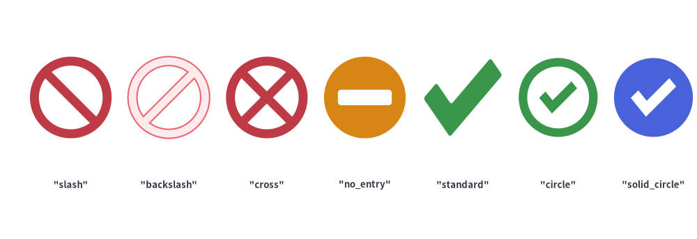
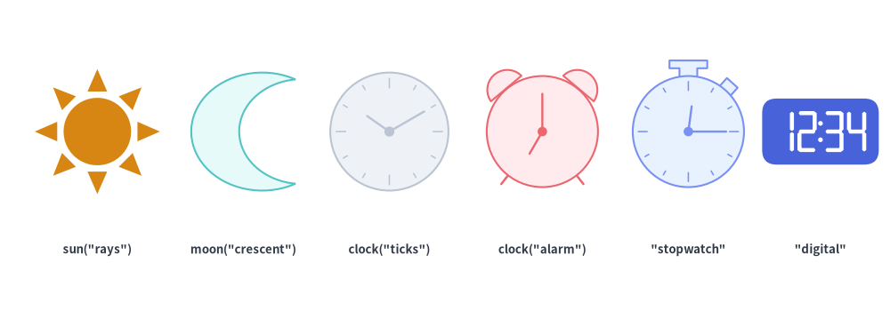

Basic, Radial, Status & Clock Shapes
The drawlib.shapes module provides declarative geometric primitives with built-in center text labels, corner rounding, hollow ring cutouts (hole_ratio), and unified styling. This page covers basic rectangular cards (rectangle), radial/circular geometries (circle, ellipse, wedge, fan, arc), status badges (forbidden, checkmark), and celestial/time primitives (sun, moon, clock).
1. Overview of Basic, Radial, Status & Clock Shapes

Source Code
from drawlib.canvas import save, setup
from drawlib.shapes import (
arc,
checkmark,
circle,
clock,
ellipse,
fan,
forbidden,
moon,
rectangle,
sun,
wedge,
)
from drawlib.styles import Styles
from drawlib.text import text
setup(width=128, height=62)
lbl_dark = Styles.DarkBold.patch(text_size=10.5)
lbl_white = Styles.WhiteBold.patch(text_size=10.5)
# Row 1: Rectangle, Circle, Ellipse, Hollow Ring (hole_ratio), Wedge
rectangle(
(16, 44),
width=22,
height=15,
style=Styles.PrimaryFlat.patch(shape_r=2.5),
text="rectangle",
text_style=lbl_white,
)
circle((42, 44), radius=8.5, style=Styles.Neutral, text="circle", text_style=lbl_dark)
ellipse((68, 44), width=21, height=15, style=Styles.SecondaryNeutral, text="ellipse", text_style=lbl_dark)
circle(
(93, 44),
radius=8.5,
hole_ratio=0.58,
style=Styles.PrimaryNeutral,
text="ring",
text_style=Styles.DarkBold.patch(text_size=9.5),
)
wedge(
(115, 44),
radius=8.8,
width=3.6,
angle_start=20,
angle_end=240,
style=Styles.Neutral,
text="wedge",
text_style=Styles.DarkBold.patch(text_size=9.5),
)
# Row 2: Fan, Arc, Forbidden, Checkmark, Sun, Moon, Clock
fan((12, 13), radius=9.2, angle_start=25, angle_end=155, style=Styles.Neutral, text="fan", text_style=Styles.DarkBold.patch(text_size=9.5, xy_shift=(0, 4.5)))
arc((31, 18), width=15, height=13, angle_start=20, angle_end=310, style=Styles.DarkBold, text="arc", text_style=Styles.DarkBold.patch(text_size=9.5))
forbidden((49, 18), radius=6.8, variant="slash", style=Styles.DangerFlat)
text((49, 6.5), "forbidden", style=Styles.DarkBold.patch(text_size=9.5))
checkmark((66, 18), width=13.5, variant="circle", style=Styles.SuccessFlat)
text((66, 6.5), "checkmark", style=Styles.DarkBold.patch(text_size=9.5))
sun((83, 18), radius=7.4, variant="rays", style=Styles.WarningNeutral)
text((83, 6.5), "sun", style=Styles.DarkBold.patch(text_size=9.5))
moon((99, 18), width=12, height=13.5, variant="crescent", style=Styles.SecondaryNeutral)
text((99, 6.5), "moon", style=Styles.DarkBold.patch(text_size=9.5))
clock((116, 18), radius=6.8, variant="ticks", hour=10, minute=10, style=Styles.Neutral)
text((116, 6.5), "clock", style=Styles.DarkBold.patch(text_size=9.5))
save()
2. Parameter & Style Signature Reference
All basic and radial shape functions share a consistent parameter and styling contract:
| Parameter / Style Field | Type | Default | Description |
|---|---|---|---|
xy |
tuple[float, float] |
Required | Anchor coordinate (x, y) (geometric center when using preset Styles.*). |
width / height |
float |
Required | Horizontal and vertical dimensions (> 0) for rectangle, ellipse, checkmark, moon, and arc. |
radius |
float |
Required | Outer radius (> 0) for circle, wedge, fan, forbidden, sun, and clock. |
hole_ratio |
float | None |
None |
Optional concentric center cutout ratio in (0.0, 1.0) on rectangle, circle, and ellipse (as well as planar/regular polygons). |
style |
Style |
Required | Visual style defining fill (shape_fill_color), border (shape_line_color, shape_line_width, shape_line_style), and geometry modifiers. |
style.shape_r |
float | tuple[float, ...] |
None |
Corner rounding radius for rectangle and checkmark (scalar float or 4-tuple (bl, tl, tr, br)). |
style.angle |
float |
0.0 |
Counterclockwise rotation angle in degrees around the shape center. |
style.halign / valign |
str |
"center" |
Coordinate anchor alignment ("left"/"center"/"right", "bottom"/"center"/"top"). |
text |
str |
"" |
Embedded label rendered at the geometric center of the shape. |
text_style |
Style | None |
None |
Typography style override (text_color, text_size, text_font). |
text_style.xy_shift |
tuple[float, float] |
(0.0, 0.0) |
Relative (dx, dy) offset for the embedded text label (rotates with the shape). |
text_style.angle |
float | None |
None |
Independent text rotation angle in degrees (overrides shape style.angle). |
3. Rectangles, Rounded Corners & Hollow Frames (rectangle)
rectangle(xy, width, height, *, hole_ratio=None, style, text="", text_style=None) draws a rectangular card or hollow frame centered at xy.
- Uniform Rounded Corners: Patch
shape_rwith a scalar float (e.g.Styles.Neutral.patch(shape_r=4)). - Per-Corner Rounding: Pass a 4-tuple
(bottom_left, top_left, top_right, bottom_right)to round specific corners (ideal for tabs, headers, and split cards). - Hollow Rectangular Frame (
hole_ratio): Passhole_ratio=0.6(0 < hole_ratio < 1) to cut out a proportional inner hole (preservingshape_rrounding on both outer and inner contours).
from drawlib.canvas import save, setup
from drawlib.shapes import rectangle
from drawlib.styles import Styles
setup(width=128, height=38)
# 1. Sharp-cornered neutral card
rectangle(
(18, 19),
width=27,
height=20,
style=Styles.Neutral,
text="Sharp\n(shape_r=0)",
text_style=Styles.DarkBold.patch(text_size=10.0),
)
# 2. Uniform rounded hero card
rectangle(
(49, 19),
width=27,
height=20,
style=Styles.PrimaryFlat.patch(shape_r=4),
text="Rounded\n(shape_r=4)",
text_style=Styles.WhiteBold.patch(text_size=10.0),
)
# 3. Per-corner rounded tab (top-left and top-right rounded)
rectangle(
(80, 19),
width=27,
height=20,
style=Styles.SecondaryNeutral.patch(shape_r=(0, 5, 5, 0)),
text="Top Tab\n(0, 5, 5, 0)",
text_style=Styles.DarkBold.patch(text_size=10.0),
)
# 4. Hollow rectangular frame (hole_ratio=0.58)
rectangle(
(111, 19),
width=27,
height=20,
hole_ratio=0.58,
style=Styles.PrimaryNeutral.patch(shape_r=3),
text="Frame",
text_style=Styles.DarkBold.patch(text_size=10.0),
)
save()

4. Circles, Ellipses & Hollow Rings (circle, ellipse, hole_ratio)
circle(xy, radius, *, hole_ratio=None, style, text="", text_style=None): Standard circle centered atxywith diameter2 * radius. Settinghole_ratioin(0.0, 1.0)creates a hollow annular ring with inner radiusradius * hole_ratio.ellipse(xy, width, height, *, hole_ratio=None, style, text="", text_style=None): Oval bounded by horizontalwidthand verticalheight(supports rotation viastyle.patch(angle=...)and elliptical ring cutouts viahole_ratio).
from drawlib.canvas import save, setup
from drawlib.shapes import circle, ellipse
from drawlib.styles import Styles
setup(width=126, height=40)
# 1. Solid focal circle
circle(
(18, 20),
radius=12,
style=Styles.PrimaryFlat,
text="circle\nr=12",
text_style=Styles.WhiteBold.patch(text_size=10.5),
)
# 2. Hollow circular ring (hole_ratio=0.6)
circle(
(48, 20),
radius=12,
hole_ratio=0.6,
style=Styles.PrimaryNeutral,
text="hole=0.6",
text_style=Styles.DarkBold.patch(text_size=10.0),
)
# 3. Solid ellipse
ellipse(
(80, 20),
width=28,
height=19,
style=Styles.Neutral,
text="ellipse\n28x19",
text_style=Styles.DarkBold.patch(text_size=10.5),
)
# 4. Hollow elliptical ring (hole_ratio=0.55)
ellipse(
(111, 20),
width=26,
height=19,
hole_ratio=0.55,
style=Styles.SecondaryNeutral,
text="hole=0.55",
text_style=Styles.DarkBold.patch(text_size=9.5),
)
save()

5. Angular Sectors, Wedges & Arcs (wedge, fan, arc)
All angular primitives measure angle_start and angle_end in degrees counterclockwise (CCW) from the positive X-axis ($0^\circ$ = right, $90^\circ$ = top, $180^\circ$ = left, $270^\circ$ = bottom):
wedge(xy, radius, *, style, width=None, angle_start=0, angle_end=360, text="", text_style=None): Draws an angular ring slice whenwidth(wall thickness) is specified, or a solid pie sector whenwidth=None.fan(xy, radius, *, style, angle_start=0, angle_end=180, text="", text_style=None): Draws a filled pie sector connecting the center apexxyto the outer circular arc fromangle_starttoangle_end.arc(xy, width, height, *, style, angle_start=0.0, angle_end=360.0, text="", text_style=None): Draws an open, unfilled elliptical stroke along the perimeter betweenangle_starttoangle_end.
from drawlib.canvas import save, setup
from drawlib.shapes import arc, fan, wedge
from drawlib.styles import Styles
setup(width=120, height=42)
# 1. Angular donut slice (wedge with wall thickness width=5)
wedge(
(23, 21),
radius=14,
width=5,
angle_start=0,
angle_end=240,
style=Styles.PrimaryFlat,
text="67%",
text_style=Styles.PrimaryBold.patch(text_size=11.0),
)
# 2. Circular pie sector (fan from 30° to 150°)
fan(
(61, 13),
radius=18,
angle_start=30,
angle_end=150,
style=Styles.Neutral,
text="FOV 120°",
text_style=Styles.DarkBold.patch(text_size=11.0, xy_shift=(0, 8)),
)
# 3. Open elliptical stroke (arc from 20° to 320°)
arc(
(99, 21),
width=28,
height=22,
angle_start=20,
angle_end=320,
style=Styles.DarkBold.patch(shape_line_style="dashed"),
text="Orbit",
text_style=Styles.DarkBold.patch(text_size=11.0),
)
save()

6. Status & Access Control Badges (forbidden, checkmark)
For firewall rules, access control matrices, CI/CD verification gates, and audit checklists, forbidden and checkmark render crisp compound-path vector status symbols:
forbidden(xy, radius, *, variant="slash", thickness_ratio=None, style, text="", text_style=None):variant:"slash"(or"standard"),"backslash","cross","no_entry"(or"minus").thickness_ratio: Ring and bar thickness ratio in(0.0, 0.5)relative toradius(default0.22).
checkmark(xy, width, height=None, *, variant="standard", thickness_ratio=None, style, text="", text_style=None):variant:"standard"(or"check"standalone L-tick),"circle"(circular ring + checkmark),"solid_circle"(solid circular badge with transparent checkmark cutout).thickness_ratio: Stroke thickness ratio in(0.0, 0.5)relative tomin(width, height)(default0.24).
from drawlib.canvas import save, setup
from drawlib.shapes import checkmark, forbidden
from drawlib.styles import Styles
from drawlib.text import text
setup(width=128, height=44)
lbl = Styles.DarkBold.patch(text_size=9.5)
# Forbidden variants
for i, (var, st) in enumerate([
("slash", Styles.DangerFlat),
("backslash", Styles.DangerNeutral),
("cross", Styles.DangerFlat),
("no_entry", Styles.WarningFlat),
]):
cx = 13 + i * 18
forbidden((cx, 26), radius=7.5, variant=var, style=st)
text((cx, 10), f'"{var}"', style=lbl)
# Checkmark variants
for i, (var, st) in enumerate([
("standard", Styles.SuccessFlat.patch(shape_r=0.5)),
("circle", Styles.SuccessFlat),
("solid_circle", Styles.PrimaryFlat),
]):
cx = 85 + i * 17.5
checkmark((cx, 26), width=14.5, variant=var, style=st)
text((cx, 10), f'"{var}"', style=lbl)
save()

7. Celestial & Clock Primitives (sun, moon, clock)
For light/dark theme toggles, day/night operational schedules, cron jobs, SLA timers, and latency indicators, use sun, moon, and clock:
sun(xy, radius, *, variant="rays", num_rays=8, style, text="", text_style=None):variant:"rays"(or"standard", core circle + detached triangular rays),"ring"(hollow center ring + rays),"beams"(rectangular beam rays).
moon(xy, width, height, *, variant="crescent", mirror=False, style, text="", text_style=None):variant:"crescent"(or"standard"),"thin","waxing","half". Setmirror=Trueto flip horizontally.
clock(xy, radius, *, variant="standard", hour=10.0, minute=10.0, style, text="", text_style=None):variant:"standard","ticks"(or"dial", 12-hour tick marks),"alarm"(twin top bells + bottom legs),"stopwatch"(or"timer", top stem + side button + ticks), or"digital"(font-free 7-segmentHH:MMvector display without ghost background segments).
from drawlib.canvas import save, setup
from drawlib.shapes import clock, moon, sun
from drawlib.styles import Styles
from drawlib.text import text
setup(width=128, height=46)
lbl = Styles.DarkBold.patch(text_size=9.5)
# Sun & Moon
sun((14, 27), radius=9.0, variant="rays", num_rays=8, style=Styles.WarningFlat)
text((14, 10), 'sun("rays")', style=lbl)
moon((35, 27), width=15, height=17, variant="crescent", style=Styles.SecondaryNeutral)
text((35, 10), 'moon("crescent")', style=lbl)
# Clock variants
clock((56, 27), radius=8.5, variant="ticks", hour=10, minute=10, style=Styles.Neutral)
text((56, 10), 'clock("ticks")', style=lbl)
clock((78, 27), radius=8.0, variant="alarm", hour=7, minute=0, style=Styles.DangerNeutral)
text((78, 10), 'clock("alarm")', style=lbl)
clock((99, 27), radius=8.0, variant="stopwatch", hour=0, minute=15, style=Styles.PrimaryNeutral)
text((99, 10), '"stopwatch"', style=lbl)
clock((118, 27), radius=7.8, variant="digital", hour=12, minute=34, style=Styles.PrimaryFlat)
text((118, 10), '"digital"', style=lbl)
save()

[!TIP]
- To draw curved arc connectors with terminal arrowheads (
arrow_head="->"), useline_arc()orline_curved()in Lines & Connectors, or 2D blockarrow_arc()in Block Arrows.- For multi-sided polygons, gears, math symbols, lightning bolts, explosion bursts, tags, plaques, and custom Bézier paths, see Polygons & Custom Paths.
- For 3D database cylinders, cubes, documents, cloud boundaries, grouping braces, actor faces, shields, ribbons, funnels, pins, hearts, and speech callouts, see Cylinders, Cubes, Clouds & Callouts.